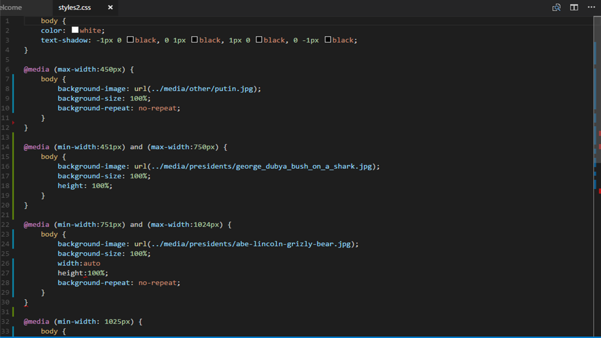

CSS Media Queries
What are CSS Media Queries
CSS Media Queries are ways that you can adaptively build a website for different sizes (such as if you have an iphone screen or a browser screen
These are very important in building web sites because it helps us in creating a responsive web design (an extremely important concept currently in web development)
How Do we implement Media Queries?
To implement media queries, we will use the phrase @media where we have placed our CSS Stylesheet.
Here is an example of the code you would use for Media Queries
For a good example of media queries, go to CSS Media Queries Examples